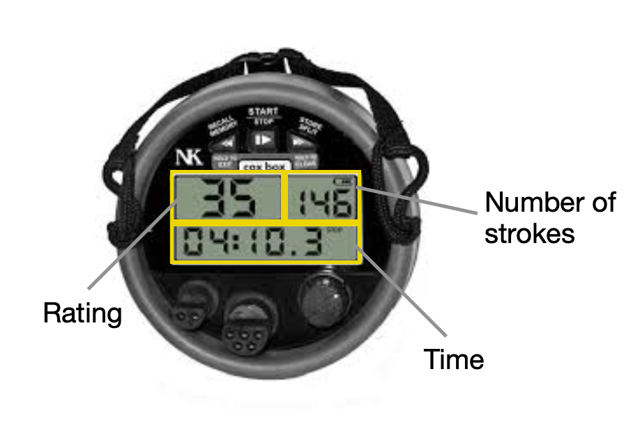

CoxBox
The coxbox is a machine that allows cox's to moniter how the boat is going in a race and training. It shows us the rating which is the strokes per minute. Cox's use it quite frequintly in trainings. It is also critical to helping the cox to stick to the race plan, which usually involves strategic changes of rating. It counts each stroke taken. This is mainly used in training as it is hard to steer and speak while also counting. Finally the timing. Your cox box can time things. Usually we use this to time races and training sessions.
